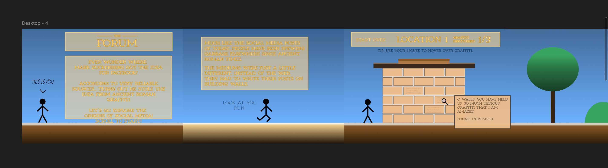
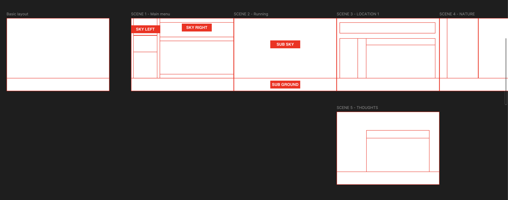
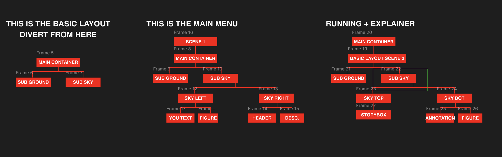

Aloin työstämään suunnitteluvaiheen jälkeen nettisivua. Tein Figmalla nopean prototyypin nettisivusta, jossa hahmottelin sivuttainsuunnassa skrollattavan seikkailun, jossa tutkisimme roomalaisen kylän maisemia ja erityisesti seinälle kirjoitettuja graffiteja. Ideana oli vetää yhtäläisyyksiä nykymaailman somen ja historian graffitien kirjoittelun välillä ja lisätä jotain kirjoitettuja ajatuksia kohtausten väliin. Jälkikäteen ajateltuna toivon, että olisin tehnyt prototyypin figmalla jo aikaisemmin. Itsellä oli kuitenkin sellanen fiilis, että kurssilla oli tarkoitus olla hyvin kokeileva lähestymistapa, ja ajattelin, että figmalla hahmottelu ois jotenkin vähän huijaamista. Mutta pelkkä tekeminen koodaamalla tuntui ainakin toistaiseksi vielä tosi vaikealta ja aikaa vievältä, joten suunnitelma tietokoneella tehtynä toi jotain konkreettista silmien eteen. Figma on myös todella kätevä sillä, periaatteessa sieltä löytyy lähes kaikki samat ominaisuudet kuin mitä css/html:llä on mahdollista tehdä, muutamia poikkeuksia lukuunottamatta.

Prototyyppi syntyi aika nopeesti edeltävän viikon luonnostelun jälkeen. Kuitenkin sen työstämisen aikana pyöri jatkuvasti pieni epävarmuus siitä, kuinka paljon toteutukseen tulisi varata aikaa, koska en osaa vielä hahmottaa kuinka kauan koodaaminen vie. Visuaalisen prototyypin jälkeen hahmottelin punaisilla laatikoilla, miten rakentaisin nettisivun eri kohtaukset divien avulla. Päädyin tekemään toistuvan pohjan kaikille kohtauksille, jota sitten muokkaisin riippuen siitä, mitä elementtejä tarvitsisin. Tein myös kaavioita auttaakseni itseäni hahmottamaan kokonaiskuvaa, kun asiat uhkasivat mennä monimutkaiseksi laittaessa diviä divien sisään jne. Prosessi kaipaa hieman hiomista, mutta uskon, että jotenkin näin olisi kaikkien tehokkain tapa lähteä rakentamaan nettisivua.


Sommittelusuunnitelman jälkeen oli aika siirtyä koodauksen pariin. Tämä osuus tuntui jännittävän paljon, sillä tässä nyt täytyi konkreettisesti lähteä tekemään jotain. Lähdin palikkasuunnitelmani perusteella luomaan tarvitsemiani html elementtejä ja css tyylejä. Etenin kohtaus kerrallaan, rakentaen punareunaisilla diveillä runkoa elementeille. Tämä osa projektia oli yllättävän työlästä, sillä vaikka olimme käsitelleet gridejä ja flexboxia, niiden käyttäminen vaati vielä aivojumppaa ja tekoälyltä kyselyä. Käytännössä koko keskiviikko meni tähän osuuteen.
Loppuviikosta aloin täyttämään nettisivuni runkoani tyylitellyillä elementeillä. Rakensin gradientin taivaalle sekä maahan. Koodasin myös talon, jonka yksittäisiin tiiliin sijoitin tekstiä eli graffiteja. Tein hover efektin, jonka avulla ilmestyisi tekstilaatikko, jossa lukee selvemmin graffitin tekstit ja lyhyesti niiden löytöpaikoista tai kirjoittajista. Lopuksi tein figmalla vektorin suurennuslasista, jonka lisäsin koodilla korvaamaan cursorin nettisivullani. Nautin tästä osaa projektistani eniten, sillä pääsin näkemään suunnittelemani konkreettisesti rakennettuna. Aikaisempi runkojen tuntikausia kestänyt rakentelu oli yksitoikkoista ja uuvuttavaa, mutta uskon, että tämä osuus helpottuu kokemuksen myötä, kun opin parhaat käytännöt HTML- rakenteista ja CSS-tyyleistä.
Myöhemmin projektissa tuli enemmän kompastuskiviä. Jo jonkin näköisen toteutuksen koodaaminen oli sen verran keskittymistä vaativaa, että olin laiminlyönyt sivuston responsiivisuutta. Saitti näytti yhessä resoluutiossa hyvältä, mutta lähes heti kun aloin kokeilemaan erilaisia ruutukokoja, niin palikat alkoivat hajoilemaan paikoiltaan. Tuntui, että olin ehkä tehnyt toteutuksestani liian laajan, sillä olin joutunut vetämään koodausvaiheen hieman liian vauhdilla pysyäkseni aikataulussa ja täysin perillä koodin toimintalogiikasta. Tämä kostautui myöhemmässä vaiheessa. Keskittymiskyky ei enää riittänyt flexbox tetrikseen ja diveistä, jotka olivat toisten divien sisällä alkoi vaan mennä pää pyörälle. Opin tässä, että koodaamisessa nettisivun perustukset kannattaa olla huolellisesti toteutettu, koska muuten se voi kostautua myöhemmin, kun joutuu kahlaamaan isoksi paisunutta koodia, jonkin toiminnallisuuden korjaamiseksi. Tekoäly myöskään osannut suoraan korjata ongelmiani, tai sitten en osannut sanoittaa kysymystä oikein. En ollut tyytyväinen nettisivuuni vielä, mutta totesin, että nyt on kuitenkin tärkeintä saada jonkinnäköinen versio ulos ja säätää sitä, jos jää vielä aikaa.
Arvioin toteutuksen nopeuden ja omat voimavarani liian optimistisesti. Jälkikäteen ajateltuna, toivon, että olisin tajunnut karsia tiettyjä asioita pois, kuten esimerkiksi liialliset tekstit ja useat vaihtuvat layoutit. Sen sijaan olisin voinut keskittyä miettimään, mikä osa työssäni on mielenkiintoisinta omasta mielestäni ja kiteyttää toteutus siihen. Tuli mieleen viime keväisestä liike kurssista double diamond -malli, jossa suunnitteluprojektin prosessissa on laajentuva ja supistuva vaihe. Eli alussa koitetaan ideoida tosi laajasti ja sitten hieman tarkentaa näkemystä, jotta saadaan kiteytettyä omaa ideaa.
Pidin toteutuksessa erityisesti hover efektistä graffiteja tutkiessa ja se, että keksin muuttaa cursorin suurennuslasiksi. Oma fiilikseni on, että oisin voinut rakentaa juuri tätä kohtaa ideassani pidemmälle. Ehkä mielummin yksi tai kaksi kohtausta seitsemän sijaan. Pientä pelillisyystä tutkimiseen javascriptillä tai erilaisia asioita, joita olisi voinut tutkia ympäristössä tai graffitiseinässä.
Lopuksi opin, että varmuuskopiot ja versionhallinnta ovat äärimmäisen tärkeitä. Sillä itselläni kävi yhdessä kohtaa niin, että muutin sitä sun tätä koodissa ja yhtäkkiä layouttini alkoi hajoilemaan todella pahasti, enkä saanut sitä helposti korjattua. Jouduin poistamaan osia koodistani ja copypasteemaan niitä jostain varhaisesta versiosta uusiksi, vaikka tämä tarkoittikin osittaista työn menetystä. Perjantai-iltapäivällä aloin olemaan sen verran väsynyt koodin kanssa sählätessä, että ei tehnyt enää mieli edistää projektia eteenpäin ja tuntui siltä, että jos muutan jotain niin, jokin toinen asia hajoaa. Tää taitaa olla myös joku vitsi ohjelmoinnin keskuudessa, korjaat yhden bugin ja kohta sulla on kolme uutta bugia.